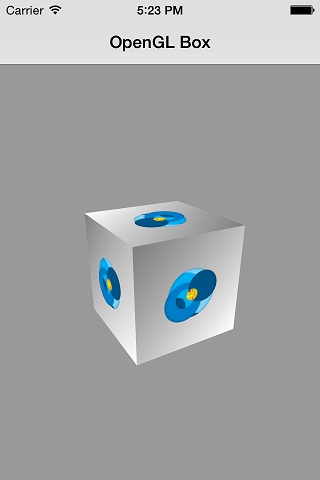

Building your OpenGL App with Multi-OS Engine¶
This page describes the OpenGLBox sample in Multi-OS Engine Technical Preview. This is a truly cross-platform sample. The screenshots below show that the same Java*-based application running on Apple iOS and Android devices, which looks and behaves the same way. Applications for different platforms share the data and part of the source code. How is this achieved? Scroll down!
- Contents:
Most OpenGL* programmers have made this small program: the rotating 3D cube. Do not be afraid If you are not so familiar with 3D graphics programming. This example will help you to start from scratch. If you are already good at OpenGL, this page will help you to focus on the specific features of Android and iOS development. Let’s begin.
Our geometry contains 6 faces, as befits a cube, and 24 vertices. Why are so many vertices? Each face has a texture of Multi-OS Engine logo. Thus, we have to divide each of 8 real vertices into 3 new vertices with different texture coordinates.
There is no lighting effects in our scene. So we are able to use pretty simple shaders. The vertex shader just transforms geometry and passes the texture coordinates to the fragment shader. Then the fragment shader makes simple texturing.
Platform Specific Code¶
Multi-OS Engine does not try to hide platform-specific code unnecessarily. It’s great for porting and debugging applications. The classes for each platform can have their own features:
package org.moe.samples.openglbox.ios;
class Main extends NSObject implements UIApplicationDelegate
class OpenGLBoxController extends GLKViewController implements GLKViewDelegate
class ShaderProgram extends ShaderProgramBase
The GLKit framework provides functions and classes that reduce the effort required to create new shader-based apps:
GLKViewController:
The GLKViewController class provides all of the standard view controller functionality, but additionally implements an OpenGL ES rendering loop. A GLKViewController object works in conjunction with a GLKView object to display frames of animation in the view.
GLKView:
The GLKView class simplifies the effort required to create an OpenGL ES application by providing a default implementation of an OpenGL ES-aware view. A GLKView directly manages a framebuffer object on your application’s behalf; your application simply draws into the framebuffer when the contents need to be updated.
GLKViewDelegate:
An object that implements the GLKViewDelegate protocol can be set as a GLKView object’s delegate. A delegate allows your application to provide a drawing method to a GLKView object without subclassing the GLKView class.
package org.moe.samples.openglbox.android;
class OpenGLBoxActivity extends Activity
class SurfaceView extends GLSurfaceView
class BoxRenderer implements GLSurfaceView.Renderer
class ShaderProgram extends ShaderProgramBase
There are two foundational classes in the Android framework that let you create and manipulate graphics with the OpenGL ES API: GLSurfaceView and GLSurfaceView.Renderer. To use OpenGL in your Android application, one needs to understand how to implement these classes in an activity.
GLSurfaceView:
This class is a View where you can draw and manipulate objects using OpenGL API calls and is similar in function to a SurfaceView. You can use this class by creating an instance of GLSurfaceView and adding your Renderer to it. However, if you want to capture touch screen events, you should extend the GLSurfaceView class to implement the touch listeners responding to Touch Events.
GLSurfaceView.Renderer:
This interface defines the methods required for drawing graphics in a GLSurfaceView. You must provide an implementation of this interface as a separate class and attach it to your GLSurfaceView instance using GLSurfaceView.setRenderer().
Common Code¶
OpenGL-code is similar on both platforms. It allows us to take out interfaces or even abstract classes into the common part of the project. For example, a class working with shaders must inherit abstract base class ShaderProgramBase:
package org.moe.samples.openglbox.common;
public abstract class ShaderProgramBase {
protected static int INVALID_VALUE = -1;
protected int programHandle = INVALID_VALUE;
protected HashMap<String, Integer> attributes = new HashMap<String, Integer>();
public abstract void create(String vertexCode, String fragmentCode);
public abstract void use();
public abstract void unUse();
public abstract int getAttributeLocation(String attribute);
public abstract int getUniformLocation(String uniform);
protected abstract int loadShader(int type, String shaderCode);
public int getProgramHandle() {
return programHandle;
}
}
Now let’s dive into platform-specific implementations of ShaderProgramBase.create() method.
iOS:
package org.moe.samples.openglbox.ios;
...
public class ShaderProgram extends ShaderProgramBase {
...
@Override
public void create(String vertexCode, String fragmentCode) {
...
programHandle = OpenGLES.glCreateProgram();
OpenGLES.glAttachShader(programHandle, vertexShader);
OpenGLES.glAttachShader(programHandle, fragmentShader);
OpenGLES.glLinkProgram(programHandle);
}
}
Android:
package org.moe.samples.openglbox.android;
...
public class ShaderProgram extends ShaderProgramBase {
...
@Override
public void create(String vertexCode, String fragmentCode) {
...
programHandle = GLES20.glCreateProgram();
GLES20.glAttachShader(programHandle, vertexShader);
GLES20.glAttachShader(programHandle, fragmentShader);
GLES20.glLinkProgram(programHandle);
}
}
As you can see these code snippets look pretty similar. It may seem that the code differs only in prefixes - OpenGLES and GLES20. Not quite right but not far off. Look carefully at loadShader() method:
iOS:
package org.moe.samples.openglbox.ios;
...
public class ShaderProgram extends ShaderProgramBase {
...
@Override
protected int loadShader(int type, String shaderCode) {
...
IntPtr status = PtrFactory.newIntReference();
OpenGLES.glGetShaderiv(shader, ES2.GL_COMPILE_STATUS, status);
if (status.getValue() == 0) {
BytePtr info = PtrFactory.newWeakByteArray(256);
OpenGLES.glGetShaderInfoLog(shader, 256, PtrFactory.newWeakIntReference(0), info);
OpenGLES.glDeleteShader(shader);
throw new IllegalArgumentException("Shader compilation failed with: " + info.toASCIIString());
}
...
}
}
Android:
package org.moe.samples.openglbox.android;
...
public class ShaderProgram extends ShaderProgramBase {
...
@Override
protected int loadShader(int type, String shaderCode) {
...
int[] status = new int[1];
GLES20.glGetShaderiv(shader, GLES20.GL_COMPILE_STATUS, status, 0);
if (status[0] == 0) {
String info = GLES20.glGetShaderInfoLog(shader);
GLES20.glDeleteShader(shader);
throw new IllegalArgumentException("Shader compilation failed with: " + info);
}
...
}
}
This code differs by the way we pass a pointers to OpenGL. You will see similar distinctions in other places too.
Common Data¶
Now it’s time to describe other common parts. Our applications uses the following general data:
Geometry
public class Geometry {
public static final float[] VERTICES = new float[] { … };
public static final byte[] INDICES = { … };
}
Shaders (as String constants)
public class Shaders {
public static final String VERTEXT_SHADER = " ... ";
public static final String FRAGMENT_SHADER = " ... ";
}
Parameters (background color, rotation speed, different camera related values)
public class Parameters {
...
public static final float DEGREES_PER_SECOND = 90.0f;
...
}
All this constants are self-explained. They represent the common 3D data model and operational logics. In larger projects, the common data will be even greater.
3D Mathematics¶
OpenGL ES 2.0 and later doesn’t provide built-in functions for creating or specifying transformation matrices. Instead, programmable shaders provide vertex transformation, and you specify shader inputs using generic uniform variables.
iOS:
The GLKit framework includes a comprehensive library of vector and matrix types and functions, optimized for high performance on iOS hardware.
viewMatrix = GLKit.GLKMatrix4MakeLookAt(
0.0f, 0.0f, Parameters.EYE_Z, // eye
0.0f, 0.0f, 0.0f, // center
0.0f, 1.0f, 0.0f // up-vector
);
viewMatrix = GLKit.GLKMatrix4Rotate(viewMatrix,
GLKit.GLKMathDegreesToRadians(Parameters.PITCH), 1, 0, 0);
Android:
Class ‘android.opengl.Matrix <http://developer.android.com/reference/android/opengl/Matrix.html>`_ provides math utilities. These methods operate on OpenGL ES format matrices and vectors stored in float arrays.
Matrix.setLookAtM(viewMatrix, 0,
0.0f, 0.0f, Parameters.EYE_Z, // eye
0.0f, 0.0f, 0.0f, // center
0.0f, 1.0f, 0.0f // up-vector
);
Matrix.rotateM(viewMatrix, 0, Parameters.PITCH, 1, 0, 0);
But you can implement basic math classes on your own and increase the reuse of the common code.
Loading Textures¶
iOS:
The GLKTextureLoader class simplifies the effort required to load your texture data. The GLKTextureLoader class can load two-dimensional or cubemap textures in most image formats supported by the Image I/O framework. On iOS, it can also load textures compressed in the pvrtc format. It can load the data synchronously or asynchronously.
public static int loadGLTexture(String name, String extension) {
NSMutableDictionary options = NSMutableDictionary.alloc().init();
options.put(NSNumber.numberWithBool(true), GLKit.GLKTextureLoaderOriginBottomLeft());
String path = NSBundle.mainBundle().pathForResourceOfType(name, extension);
GLKTextureInfo info = GLKTextureLoader.textureWithContentsOfFileOptionsError(path, options, null);
if (info == null) {
System.out.println("Error loading file: " + name + "." + extension);
return -1;
}
return info.name();
}
The GLKTextureLoader and GLKTextureInfo classes do not manage the OpenGL texture for you. Once the texture is returned to your app, you are responsible for it. This means that after your app is finished using an OpenGL texture, it must explicitly deallocate it by calling the glDeleteTextures() function.
Android:
For good or bad, but we’re implementing it manually:
public static int loadGLTexture(Bitmap bitmap) {
int[] textureIDs = new int[1];
GLES20.glGenTextures(1, textureIDs, 0);
GLES20.glBindTexture(GLES20.GL_TEXTURE_2D, textureIDs[0]);
// Create Nearest Filtered Texture
GLES20.glTexParameterf(GLES20.GL_TEXTURE_2D, GLES20.GL_TEXTURE_MIN_FILTER,
GLES20.GL_LINEAR);
GLES20.glTexParameterf(GLES20.GL_TEXTURE_2D, GLES20.GL_TEXTURE_MAG_FILTER,
GLES20.GL_LINEAR);
GLES20.glTexParameterf(GLES20.GL_TEXTURE_2D, GLES20.GL_TEXTURE_WRAP_S, GLES20.GL_REPEAT);
GLES20.glTexParameterf(GLES20.GL_TEXTURE_2D, GLES20.GL_TEXTURE_WRAP_T, GLES20.GL_REPEAT);
// Use the Android GLUtils to specify a two-dimensional texture image from our bitmap
GLUtils.texImage2D(GLES20.GL_TEXTURE_2D, 0, bitmap, 0);
return textureIDs[0];
}
Of course, you always can write your own wrapper for such OpenGL-intensive code. We didn’t set to ourselves such a task.
Timing¶
iOS:
Method timeSinceLastUpdate() returns the amount of time that has passed since the last time the view controller called the delegate’s update() method:
public void update() {
rotation += Parameters.DEGREES_PER_SECOND * timeSinceLastUpdate();
modelMatrix = GLKit.GLKMatrix4Identity();
modelMatrix = GLKit.GLKMatrix4Rotate(modelMatrix, GLKit.GLKMathDegreesToRadians(rotation), 0, 1, 0);
}
Android:
There is no such method on Android. So we have to recreate it manually:
private long lastTime;
public void onSurfaceCreated(GL10 unused, EGLConfig config) {
…
lastTime = System.nanoTime();
}
public void onDrawFrame(GL10 unused) {
update();
drawBox();
}
double timeSinceLastUpdate() {
long time = System.nanoTime();
double delta = (double) (time - lastTime) / 1000000000;
lastTime = time;
return delta;
}
private void update() {
if (isPaused)
return;
rotation += Parameters.DEGREES_PER_SECOND * timeSinceLastUpdate();
Matrix.setIdentityM(modelMatrix, 0);
Matrix.rotateM(modelMatrix, 0, rotation, 0, 1, 0);
}
Summary and Downloads¶
OpenGL development with Java on iOS is quite similar to that on Android with many advantages:
OpenGL ES is a C-based API that is supported by both iOS and Android with great portability.
Familiar Java syntax.
Debugging two targets side by side use the powerful iOS simulator and Android emulator.
You can download all Multi-OS Engine samples here (Java) and here (Kotlin).